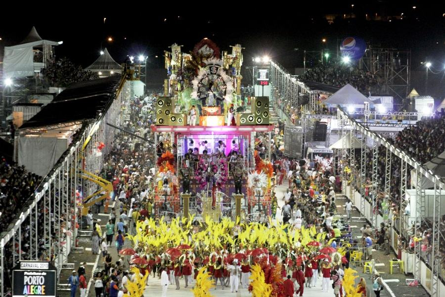
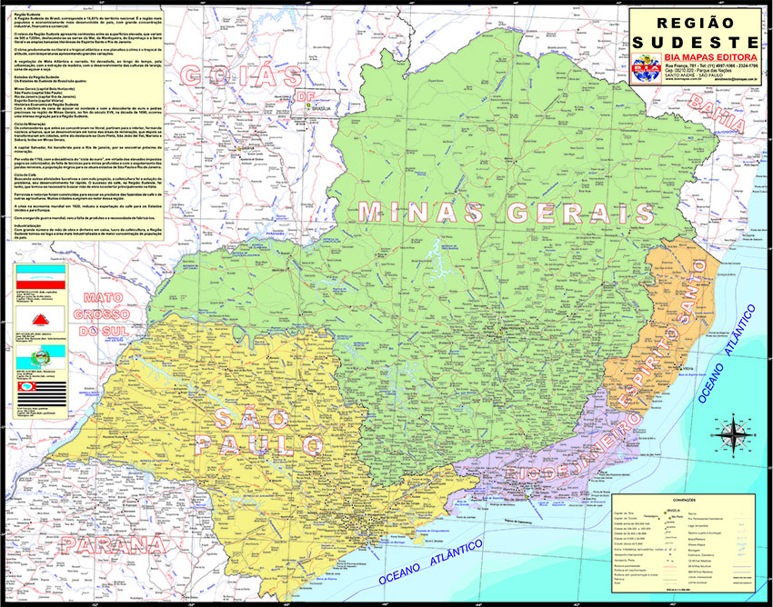
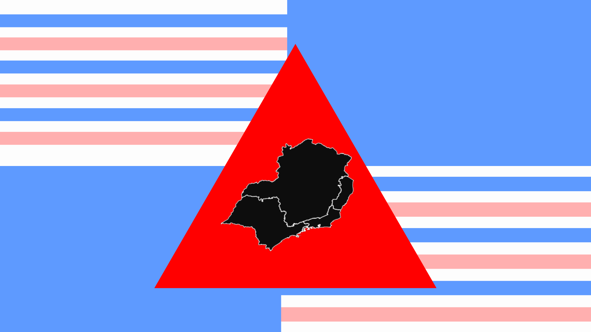

CULTURA
- Shows: A região abriga alguns dos principais festivais de música do Brasil, como o Rock in Rio, que ocorre no Rio de Janeiro, e o Lollapalooza, que acontece em São Paulo.
- Festa junina: Festa junina: tem origem nas festas pagãs europeias, mas foi adaptada para o calendário católico, sendo dedicada a São João, Santo Antônio e São Pedro. A festa é caracterizada por fogueiras, danças típicas como quadrilha, comidas típicas como milho, paçoca e canjica, além de decorações com bandeirinhas coloridas e balões.
- Festivais de cinema e teatro: a região Sudeste é palco de importantes festivais de cinema e teatro, como a Mostra Internacional de Cinema de São Paulo e o Festival de Teatro de Curitiba.
- Esportes: a região Sudeste é muito conhecida por sua paixão por esportes, especialmente pelo futebol, que mobiliza multidões nos estádios e nas ruas das cidades.
- Carnaval: O Carnaval da região sudeste é um dos mais famosos do mundo, e atrai milhões de turistas todos os anos. Os desfiles das escolas de samba são a atração principal, com suas fantasias coloridas, carros alegóricos e músicas animadas. Além disso, há muitos blocos de rua que desfilam pela cidade, com foliões vestidos com fantasias criativas e dançando ao som de sambas e marchinhas.

GASTRONOMIA
- Feijoada: Além de ser uma refeição deliciosa e bastante consistente, a Feijoada também é conhecida por ser um prato que reúne pessoas, promovendo a socialização e a celebração.
- Pão de queijo: um tipo de pão feito com queijo, polvilho e ovos, que é uma especialidade de Minas Gerais, mas que também é apreciado em todo o Brasil.
- Tutu de feijão: um prato feito com feijão cozido e amassado, que é temperado com alho, cebola, bacon e linguiça, e servido com arroz, couve e outros acompanhamentos.
- Moqueca: um prato de peixe cozido em um molho de tomate, cebola, coentro e pimentão, típico do estado do Espírito Santo.
- Virado à paulista: um prato feito com feijão, arroz, bisteca, couve, banana frita, torresmo e ovo, que é um dos pratos mais tradicionais de São Paulo.
- Canjiquinha: um prato feito com milho branco moído, que é cozido com carne de porco e temperos, típico de Minas Gerais.
- Bauru: O Bauru é um sanduíche muito popular na culinária brasileira, originário da cidade de Bauru, localizada no interior do estado de São Paulo. A ideia era criar um sanduíche que pudesse ser preparado rapidamente e que fosse capaz de saciar a fome dos estudantes.
MÚSICA
- Samba: O samba é um gênero musical que se originou no Rio de Janeiro no início do século XX, mas que se espalhou por todo o Brasil e se tornou um dos ritmos mais populares do país. É caracterizado por uma batida marcante e animada, com influências africanas e européias.
- Bossa nova: surgiu no final da década de 1950, no Rio de Janeiro. Ela é conhecida por suas batidas suaves e sincopadas, letras poéticas e melodia sofisticada. A bossa nova teve grande impacto na música popular brasileira e influenciou diversos gêneros musicais em todo o mundo, tornando-se um dos mais importantes movimentos musicais da história do Brasil.
- Funk: é um estilo de música eletrônica que se originou no Rio de Janeiro e é caracterizado por batidas pesadas e letras que originalmente retratavam a vida na periferia.
- Choro: O choro é um gênero musical instrumental brasileiro que surgiu no final do século XIX, principalmente na região do Rio de Janeiro. É uma forma de música popular, mas que também possui uma forte influência da música erudita, com um alto nível de virtuosismo técnico e criatividade musical.
- Pagode: surgiu no Rio de Janeiro, na década de 1970, como uma vertente do samba. É caracterizado pela presença de instrumentos como o pandeiro, o repique de mão, o surdo e o tantã, além de um ritmo mais acelerado que o samba tradicional.

CARTOGRAFIA
- A região Sudeste do Brasil é uma das mais importantes do país em termos econômicos, sociais e culturais. É composta por quatro estados: São Paulo, Rio de Janeiro, Minas Gerais e Espírito Santo, e possui uma grande diversidade de paisagens e características geográficas.
- A cartografia da região Sudeste do Brasil é bastante diversa, com diferentes tipos de relevo, clima, hidrografia e vegetação. O relevo é marcado pela presença da Serra do Mar, que acompanha todo o litoral da região, e pelas serras do Espinhaço e da Mantiqueira, que atravessam Minas Gerais e parte de São Paulo.
- A cartografia da região Sudeste também é marcada pela presença de importantes centros urbanos, como São Paulo, Rio de Janeiro e Belo Horizonte, que concentram grande parte da população e da atividade econômica da região. Essas cidades são importantes polos industriais, comerciais e culturais, e apresentam uma grande variedade de atrativos turísticos, como praias, parques, museus e monumentos históricos.
- A cartografia da região Sudeste do Brasil é marcada pela diversidade de paisagens e características geográficas, bem como pela presença de importantes centros urbanos e atrativos turísticos. No entanto, é importante destacar que essa região também enfrenta desafios em relação à preservação do meio ambiente e à promoção do desenvolvimento sustentável.

BANDEIRA
- A nossa bandeira foi criada a partir da junção das quatro bandeiras dos estados da região sudeste.
- As quatro divisões da tela para representar a bandeira do Rio de Janeiro, as 13 listras são parte da bandeira de São Paulo, e cada uma delas representa uma das 13 colônias que formaram o estado de São Paulo no período colonial.
- As cores do fundo são do estado do Espirito Santo. A cor azul representa o céu e o mar, simbolizando a grandeza, a paz e a serenidade, o branco representa a pureza, a paz e a harmonia, e o rosa, simboliza a flor da vitória-régia, que é uma planta típica da região e representa a riqueza e a beleza natural do Espírito Santo.
- O triângulo localizado no centro, faz parte da bandeira de Minas Gerais, que representa a liberdade e faz referência à Inconfidência Mineira.
- No interior do triângulo, estão os os estados que formam a região.
MASCOTE
Por que um macaco-prego?
- Representatividade regional: O macaco-prego é uma espécie nativa da região Sudeste do Brasil. Ao escolher o macaco-prego como mascote, acaba valorizando e destacando a riqueza da fauna local, tornando-o um símbolo identitário único para a região.
- Diversidade e biodiversidade: A região Sudeste do Brasil é conhecida por sua grande diversidade de ecossistemas, que abrangem desde a Mata Atlântica até áreas de cerrado e campos rupestres. O macaco-prego é uma espécie versátil que pode ser encontrada em diferentes habitats, refletindo a riqueza e a variedade da biodiversidade presente na região.
- Valorização da natureza e conservação: Ao escolher um macaco-prego como mascote, seria um símbolo de valorização da natureza, da conservação ambiental e da importância da proteção da vida selvagem. Isso poderia incentivar a consciência ecológica e a adoção de políticas de preservação dos recursos naturais na região.